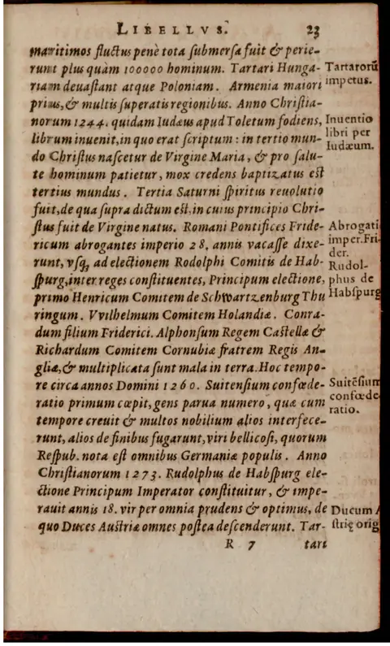
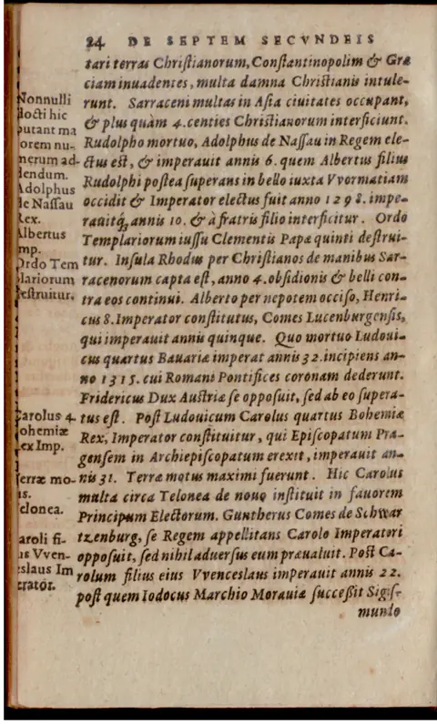
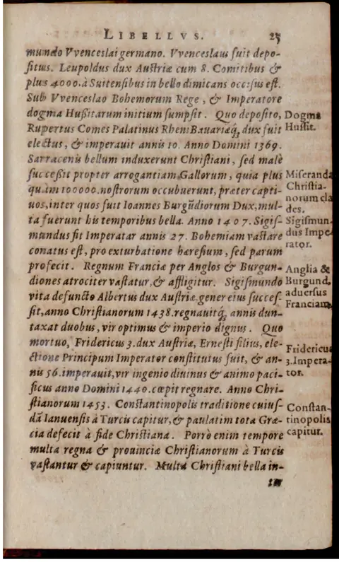
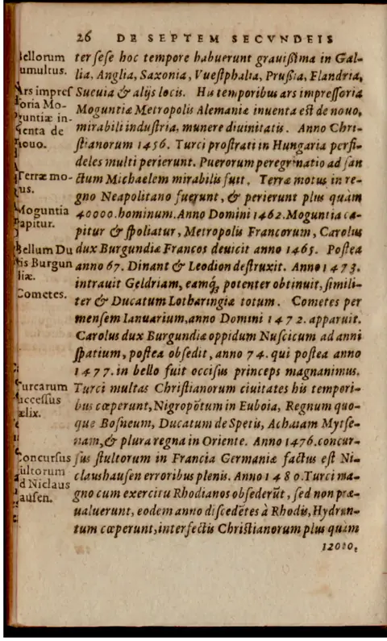
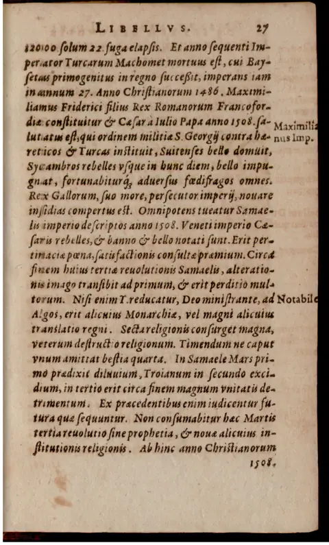
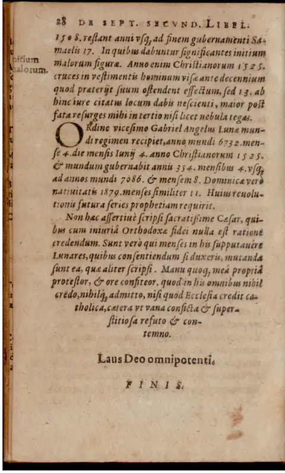
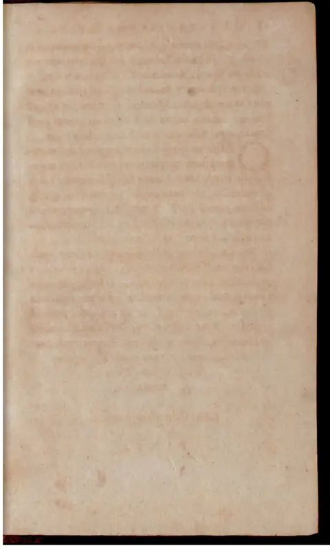

Polygraphiae libri VI
Six Books of Polygraphy
prdl-24391_polygraphiae-libri-vi · Style C / Recovered untranslated passages
About These Recovered Passages
These are Latin passages that were absent from the standard prose translation path and were recovered as separate scholarly renderings. They preserve uncertainty markers where the OCR is damaged and should be checked against the Latin before quotation.
Per-chunk renderings

Polygraphia VI — untranslated chunk full_chunk_0129
Style C scholarly rendering. GPT-5.5 fresh translation with footnoting against the angels / planets reference table. Source register: ocr_damaged_prose; OCR quality estimate: 3/5.
Charlemagne’s Secret Alphabets and the Saxon Vehmic Inquest
Trithemius preserves several purported ancient alphabets, linking them to Charlemagne’s Saxon policy, Frankish origins, Faramund’s spies in Gaul, and an alphabet found in Bede.
[unclear], lest they perish altogether. It is established, on the testimony of Otfrid,^1 that Charles,^2 devised several alphabets of his own, which he might use securely throughout his very broad realm for secret communications with individual prefects.^3 From these, with Otfrid supplying the letters, we commit these few [conjectured: examples] to writing.
zi a p 3 r n 7 t
ф Ъ л ъ ц о 6 v
к к с т і к н р 2 х
п п д ф к л т 9 щ 3
со е л м м ф с 4
н ф м м ф с 4
Charles the Great, most Christian king and emperor, fought for not less than thirty years against the Saxons,^4 whom at last he overcame by the sword and converted to the Christian faith. But fearing that they might again apostasize from the faith, as they had often done, he instituted certain secret investigators. To them he granted judicial authority: they were to travel through all Saxony, secretly and diligently inquiring into the faith and morals of the people. Whoever they found to have apostasized from the faith, or to be plunderers, adulterers, blasphemers, contemners of the Church, its priests, and its commandments, or persons troubling the Christian commonwealth by notorious crimes, or recalling or enticing the people back to paganism, they were, without delay, by imperial and royal authority, to hang with impunity from the noose, or otherwise kill as they were able.^5
So that this institution might remain perpetually unshaken, he gave the same men the power of substituting others in their place, fit persons under fixed conditions, who, enjoying the aforementioned authority, might exercise with impunity the office of inquisition and of death against the guilty. Finally, he prescribed for them secret laws, hidden signs, and also the form of an oath, by which they might proceed justly in judging and punishing; known to him and to one another, they would remain hidden from others and preserve forever, in the land of Saxony, the more secret form of necessary judgment. They also used certain alphabets among themselves for a time, although these at length wholly fell out of use. Yet the office of this kind of inquisition remains down to the present time; its ministers are now commonly called Feimeri.^6
A a ȝ g B n ȝ t
b x h v o e v
c ȝ i ȝ p ȝ x
d x k x q ȝ ȝ y
e x l h r ȝ ȝ z
f ȝ m ȝ s ȝ ȝ n
Although these characters do not appear especially beautiful or elegant, it nevertheless pleased me to join them to the new inventions already set down by me, out of honor and reverence for antiquity, since there is no one, however slightly industrious, who could not at his own discretion devise more beautiful ones for himself.^7 Yet continuous practice in writing could, by an easy compensation, correct this misshapen crookedness and, once frequently brought into habit, make it pleasing. For no one, however learned or educated in any language, becomes a good scribe unless by long practice he has transformed use into art. Another follows.
Θ a z ȝ 3 n 9 t
η b ψ h y o 5 v
γ c ȝ i x p 9 x
δ d T K H p 9 y
ε e o L V r s 3
g f Δ m Φ s d w
If anyone wishes to fashion a new alphabet for himself at his own discretion, he should know that two things in particular must be observed, though I do not always find them preserved in the preceding examples. The first is that he should form characters that are easy to draw; the simpler they are, the better they will be. The second is that he should arrange the individual letters in such a way that, when joined into words, they present a beautiful and graceful appearance. I add a third point, not promised above: if you want the writing to remain secret, make some letters of the alphabet double, after the manner of the Hebrews.^8
M a p s x m y f t v
A b v h n B r w o
C c φ i r o y l x
D d θ k e p y g X z
E e X l h p z h φ h
Λ f ξ m E p u t h y
This Hichus, a Frank, is said to have come with Marcomer^9 from the borders of Scythia to the mouths of the Rhine in Germany, and to have invented these characters as a supplement for the German language; in many respects they appear to agree rather well with it. Faramund,^10 king of the Franks in Germany, the forty-third after Marcomer, who had led the people in, died in the year 426 from the Lord’s Nativity. When he had sent his spies through Gaul in order to invade it, he ordered them to write regularly in characters such as these.^11
z a z g N n m et t
b K h R o P v
P W c M i Q X
w d K 3 P Y y
s e L Z r 3
m f 2 m s 3
n f 9 2 m 3
Besides the alphabet of the Northmen that we placed at the beginning of this sixth book, we have also found the following one written out in Bede,^12 and we entrust it to letters.
A a x g f n H e
B b X h A o N v
C c L i A P M x
D d W K M P T y
E e K L R r T 3
F f W m N s w w
^1. Otfrid is cited here as Trithemius’s authority for Carolingian secret alphabets; the name most likely evokes the learned ninth-century milieu of Otfrid of Weissenburg, though the passage treats him as a witness or transmitter of cipher material rather than as a vernacular poet. ^2. Charles is Charlemagne, king of the Franks and Lombards and, from 800, emperor; Trithemius makes him an inventor and administrative user of secret alphabets, a claim fitting the legendary Carolingian setting of Polygraphia rather than modern diplomatic history. ^3. Alphabetum here means not merely a letter list but a cipher alphabet: a substitutive graphic system for concealed writing between ruler and officials. ^4. The Saxon wars traditionally lasted from 772 to 804. Trithemius compresses their religious, political, and military dimensions into a narrative of forced conversion followed by policing against relapse into paganism. ^5. The language of inquisitio, iudiciaria potestas, and capital punishment frames the alleged institution as a secret jurisdiction, not simply espionage; Trithemius presents lethal authority as delegated directly by royal and imperial power. ^6. Feimeri refers to the agents of the Westphalian Vehmic courts, the medieval and early-modern secret tribunals called Femgerichte or Vehmgerichte. Trithemius retrojects their origin to Charlemagne’s rule over Saxony. ^7. Novi inventa mea points to Trithemius’s own newly devised alphabets in Polygraphia VI, where historical, legendary, and invented scripts are assembled as usable cryptographic models. ^8. “After the manner of the Hebrews” refers to duplicating certain alphabetic signs, probably by analogy with Hebrew final letter forms or graphic variants; Trithemius recommends homophonic or variant signs as a practical way to strengthen secrecy. ^9. Marcomer is a legendary early Frankish leader in medieval origin narratives; the migration from Scythia to the Rhine belongs to the common ethnogenetic tradition that traced European peoples to distant eastern or Trojan-Scythian origins. ^10. Faramund, or Pharamond, is a legendary king of the Franks. His placement before Merovingian history and his death in 426 reflect medieval Frankish regnal chronology rather than securely attested political history. ^11. Gaul here denotes Roman and post-Roman Gallia, the territory into which Frankish power expanded; Trithemius imagines ciphered reconnaissance preceding Frankish invasion. ^12. Bede is the Northumbrian monk and historian, author of the Historia ecclesiastica gentis Anglorum. Trithemius’s “alphabet found in Bede” likely belongs to the medieval transmission of runic or exotic alphabets associated with Insular learning.
Polygraphia VI — untranslated chunk full_chunk_0130
Style C scholarly rendering. GPT-5.5 fresh translation with footnoting against the angels / planets reference table. Source register: ocr_damaged_prose; OCR quality estimate: 3/5.
Latin Cipher Alphabets, Honorius of Thebes, Alchemical Secrecy, and Tironian Notes
The passage explains several Latin-derived cipher alphabets and numerical alphabets, gives examples attributed to Norman, Honorian, and alchemical practice, satirizes alchemy’s culture of secrecy, and begins a notice on the shorthand notes ascribed to Cicero and expanded by Cyprian.
From Latin letters, too, many alphabets are made, either when they are reduced to number according to the model that we transmitted in the preceding fifth book, or when, in imitation of the Normans,^1 they provide even our own letters with a method alongside Greek letters, so that we may communicate, with complete security, whatever we wish. Let us therefore set the letters themselves according to the number and order of our [conjectured: ordinary] alphabet, without changing them visually, and we shall have a secret and mystical method of writing, quite handsome and graceful, and confirmed by usage. This mode of numbering, however, differs from the one we set out in the fifth book, and is more suitable to our present purpose.^2
The numerical values are given as follows:
| Letter | Value | Letter | Value | Letter | Value | Letter | Value | Letter | Value |
|---|---|---|---|---|---|---|---|---|---|
| a | 1 | l | 30 | v | 500 | f9 | 7000 | ||
| b | 2 | m | 40 | x | 600 | g9 | 8000 | ||
| c | 3 | n | 50 | y | 700 | h9 | 9000 | ||
| d | 4 | o | 60 | z | 800 | i9 | 10000 | ||
| e | 5 | p | 70 | w | 900 | k9 | 20000 | et | 6 |
| q | 80 | 9 | 1000 | l9 | 30000 | ||||
| f | 7 | r | 90 | b9 | 2000 | m9 | 40000 | ||
| g | 8 | z | 100 | c9 | 3000 | n9 | 50000 | ||
| h | 9 | f | 200 | d9 | 4000 | o9 | 60000 | ||
| i | 10 | s | 300 | e9 | 5000 | p9 | 70000 | ||
| k | 20 | t | 400 | et9 | 6000 | q9 | 80000 |
Once these principles for numbering with our letters have been rightly understood, it will already be easy to extend the number to any progression, as was shown clearly enough in the preceding book. Now let us arrange an alphabet from these principles.
| Plain | Number | Cipher | Plain | Number | Cipher | Plain | Number | Cipher | Plain | Number | Cipher |
|---|---|---|---|---|---|---|---|---|---|---|---|
| a | 1 | a | f | 7 | g | ic | 13 | n | ib | 19 | t |
| b | 2 | b | g | 8 | h | id | 14 | o | k | 20 | v |
| c | 3 | c | b | 9 | i | ie | 15 | p | ka | 21 | x |
| d | 4 | d | i | 10 | k | i et | 16 | q | kb | 22 | y |
| e | 5 | e | ia | 11 | l | if | 17 | r | kc | 23 | z |
| et | 6 | f | ib | 12 | m | ig | 18 | s | k | 24 | w |
You now have, from Latin letters, a foreign alphabet of the sort that, as we said above, the Normans once made for themselves from Greek letters. With it, provided that the necessary care is observed, you will write securely to a friend who knows the invention whatever you wish for the occasion.^3 Let us add another, which we judge safer:
a o g e n c t m
b p h y o a v M
c q i v p u x s
d r k w q z j et
e i l x r g z n
f s m z s o w N
Although in Latin speech we have no need of ky and wo, nevertheless, because we use k and w in German, we have extended this alphabet also to the twenty-fourth number, so that it too may be drawn out. This method of writing can also be varied in many ways at pleasure. For example: vig. mgocguag vq va cizx vmmigog MZ Mmr vqm Mzi9m vcuigiirimvvp M9, according to the will of every writer.
Another Alphabet Follows, That of Honorius Surnamed the Theban
Another alphabet follows, that of Honorius surnamed the Theban,^4 by whose service he concealed his foolish magical trifles, as Peter of Abano^5 testifies in his larger fourth book.
a b c d e f g h i j k l m n o p q r s t u v w x y z
A B C D E F G H I J K L M N O P Q R S T U V W X Y Z
I J K L M N O P Q R S T U V W X Y Z
N V R M Z
I have also found another alphabet, [unclear] of a certain alchemist, which he was accustomed to use for concealing his secrets, making a great estimate of his art, though it contains little in itself besides words. For alchemy^6 is loved by many, and it is chaste.
o a o g e n x t
phi b o h m o i v
theta c h i u p j x
c d i k v q o
c e f m x r s x
phi f e m x s x w
Alchemy has many domestic attendants and familiars, who guard their mistress with perpetual vigilance and put themselves forward under her name, so that they may preserve her forever untouched by the intercourse of so many importunate lovers. Vanity, fraud, trickery, deception, sophistication, greed, falsity, lying confidence, folly, want, poverty, despair, flight, proscription, and beggary are the handmaids of alchemy: pretending that their mistress is beloved, they keep her inviolate, while they willingly prostitute themselves to her moneyed, avaricious, greedy, and foolish suitors.
On the Notes and a Wondrous, but Excessively Laborious, Method of Writing, of M. T. Cicero and, after Him, St. Cyprian, Bishop and Martyr
Marcus Tullius Cicero, the eloquent Roman orator,^7 wrote a book of notes, not small in extent. Saint Cyprian, bishop of the Carthaginians and martyr,^8 enlarged it with many notes and words, adding terms necessary for Christian usage, so that the work itself would become useful not only to pagans but much more also to the faithful. The codex is rare, and I have found it only once; I bought it for a paltry price. For when, in the year of the Lord’s nativity 1496, I was examining several libraries out of love for books, I found the aforementioned codex in a certain monastery of our order,^9 neglected because of its extreme age, thrown under dust and despised. I asked the abbot, a doctor of law, at what price he valued it. He replied that he would prefer to have the recently printed little works of Saint Anselm.^10 I went to the booksellers, since the matter happened in a metropolitan city, purchased the requested little works of Anselm for a sixth part of a florin, and [the text breaks off].
^1. The “Normans” are invoked here as earlier users of a foreign-looking alphabet made from Greek letter forms; Trithemius is using them as a precedent for alphabetic disguise rather than as a chronological authority. ^2. The reference is to the preceding book of the Polygraphia, where letters are converted into numbers as part of Trithemius’s wider system of cryptographic substitution and progression. ^3. “Invention” here translates adinventum, the agreed cipher device or constructed alphabet known to both correspondents. ^4. Honorius of Thebes is the legendary authorial name attached to the Sworn Book of Honorius tradition; Trithemius treats the alphabet as a magical cipher and dismisses its use as concealment of “foolish trifles.” ^5. Peter of Abano, or Pietro d’Abano (c. 1257-c. 1316), was a Paduan physician and philosopher to whom magical and astrological works circulated under attribution; the Heptameron was especially associated with his name in early-modern occult bibliography. ^6. Trithemius’s satire distinguishes alchemy’s promised, guarded “mistress” from the vices and impostures that exploit seekers of the art; the passage is less a technical account of chrysopoeia than a moral critique of fraudulent adepts. ^7. Marcus Tullius Cicero (106-43 BCE) is associated here with shorthand “notes,” the tradition usually called Tironian notes after Cicero’s freedman Tiro, although medieval manuscripts often transmitted such systems under Cicero’s authority. ^8. Cyprian of Carthage (d. 258), bishop and martyr, is credited in some medieval shorthand traditions with expanding the notes for Christian vocabulary; Trithemius presents this as a Christian adaptation of a classical notarial system. ^9. “Our order” refers to Trithemius’s Benedictine milieu; he was abbot of Sponheim and later of St. James at Wurzburg, and he often frames bibliographical discoveries through monastic libraries. ^10. Saint Anselm of Canterbury (1033-1109) was a major Benedictine theologian; Trithemius’s anecdote contrasts a neglected manuscript of rare shorthand material with inexpensive printed devotional-theological works.



Polygraphia VI — untranslated chunk full_chunk_0131
Style C scholarly rendering. GPT-5.5 fresh translation with footnoting against the angels / planets reference table. Source register: ocr_damaged_prose; OCR quality estimate: 2/5.
A Psalter in Ciceronian Notes at Strasbourg
Trithemius recounts rescuing and identifying manuscripts written in so-called Ciceronian and Cyprianic shorthand, then appends sample words and alphabets derived from those note-signs.
I handed over the codex to the rejoicing monks, and, when it had already almost been marked out for destruction, I saved it. For they had decided, out of love for the parchment, that it should be scraped clean.^1 Almost two years after this, when I had ridden to Strasbourg^2 on business of my order, and had been admitted through Johann Keifersberg,^3 the distinguished preacher of the place, into the library of the Greater Church,^4 I found a complete Psalter,^5 written throughout in the same notes of Tullius and Cyprian,^6 very handsomely copied with gold capitals. But an external title had been put on it by someone ignorant of the mystery: “A Psalter in the Armenian language.”^7 I brought in a learned man, showed him the error, and advised that it be relabelled as follows: “A Psalter written in Ciceronian notes.” Whether he did so or not I do not know, since afterward I did not return to that library. As you see, reader, we have decided to append a few sample notes from Cicero’s mode of notation.^8
[The following page is a damaged specimen-list of Latin words and their corresponding signs. The recoverable Latin headings or lemmata include:] “he approves,” “he approves together,” “bad,” “good,” “uprightness,” “badness,” “probable,” “he rejects,” “measure,” “little measure,” “letter,” “letters,” “syllable,” “time,” “through time,” [unclear], “temporal,” “very much,” “extemporal,” “man,” “excessive,” “moderate,” “convenient,” “inconvenient,” “he adapts,” “after the manner of,” “very much,” [conjectured: “in whatever way”], “modest,” “immodest,” followed by a long repeated sequence of “and.”
[The next specimen page contains mixed Greek-looking characters, numerals, and note-forms, partly unrecoverable as semantic text.]
Many other new alphabets could be formed from Cicero’s notes; we leave their extraction to the judgment of anyone competent to undertake it. For the book is rich, and contains many notes that differ markedly from one another, all of which serve those who write.
[Specimen alphabet:] abcdeFGHIKLM
[Corresponding note-lines:] πρτλινμξζρυ / νορφστυψχψω / γνητλφεψηλφ
^1. Scraping parchment refers to the making of a palimpsest: older writing was erased so the expensive writing-surface could be reused. Trithemius presents himself here as rescuing a manuscript from that fate. ^2. Argentoratum, here “Strasbourg,” was the major Alsatian ecclesiastical and humanist center in which Trithemius had contacts. ^3. Johann Geiler von Kaysersberg (1445-1510), rendered in the OCR as “Ioannem Keifersbergium,” was the celebrated cathedral preacher at Strasbourg and an important figure in late medieval German reform preaching. ^4. The “Greater Church” is Strasbourg’s cathedral church, whose library Trithemius says he entered through Geiler’s assistance. ^5. A Psalter is the biblical Book of Psalms copied as a liturgical or devotional book; the point here is that a familiar Christian text had been mistaken for a foreign-language manuscript because of its notation. ^6. “Tullius” is Marcus Tullius Cicero. “Ciceronian notes” refers to the late-antique and medieval tradition of Tironian shorthand, associated with Cicero’s freedman Tiro; “Cyprianic” notes are here treated as another ancient shorthand tradition used in Trithemius’s cryptographic antiquarianism. ^7. “Armenian” marks the cataloguer’s misidentification of the sign-system as an exotic alphabet rather than as Latin shorthand or cipher-like notation. ^8. “Mode of notation” translates forma ... notandi: in the context of Polygraphia, Trithemius treats ancient shorthand signs as material for cryptographic alphabets and writing systems.



Polygraphia VI — untranslated chunk full_chunk_0132
Style C scholarly rendering. GPT-5.5 fresh translation with footnoting against the angels / planets reference table. Source register: ocr_damaged_prose; OCR quality estimate: 3/5.
Iaimiel’s Alphabet and Numerical Secret Writing
The passage presents a cipher alphabet attributed to the fictive northern king Iaimiel and introduces a supplementary section on numerical and tabular methods for secret writing, with Trithemius apologizing for the apparent triviality of the material.
This was the alphabet of Iaimiel, great king of the Arctici, surnamed Megalopyrus the Most Wise, which he used in secret matters; it too can be altered in many forms.^1 Out of affection for our prince, we have appended below this version of ours, in which, because it was more frequently used over time, the scribe will more easily become practiced.^2
The printed character rows follow in the source:
abcdesghijklmn
opqrvwxyz
ABCDEFGHIJKLMNOPQRSTUVWXYZ
abcdefghijklmnopqrstuvwxyz
1234567890
How We May Safely Write Any Secrets by Numbers and by Many Other Varied Methods
I admit that these things are childish, since anyone, according to his own capacity and judgment, can devise many alphabets more elegant than those we have recorded in this volume.^3 For that reason I knowingly omit many things of a similar kind, which I judge to be childish, common, and of little use. I fear that one day I shall be ashamed to have applied my mind to these trifles, leaving more useful matters aside. But I beg my readers to excuse me: my own will had drawn me back from these childish studies, indeed from studies at least partly vain; but the insistence of certain friends compelled me to write them, and I neither could nor ought to deny them this without injury to the bond of friendship contracted between us.
Nevertheless, their request has led me to attach even the following chapter to the preceding material, and to set numbers in place of letters.^4 For the ancients established varied and manifold methods of writing by means of numerical signs; through these, by subtle invention, they safely transmitted their secrets to one another.^5 Persuaded therefore by the entreaties of friends, I have set down at the end of this sixth book a few methods from among many, so that a path to the knowledge of others may lie open to the uninstructed.^6 For if anyone wishes to know these matters, once he has mastered them he will easily be able to ascend to higher things, and to vary the discovered methods at his own discretion by many reciprocal changes.^7
As the beginning of this matter, we have placed a table in the following [conjectured: scheme], which, when read in different ways in the form of a cross, will contain ninety-six alphabets within itself.^8 See the table on folio 605, marked with this sign: Orchena.^9
^1. Iaimiel, the Arctici, and Megalopyrus are not identifiable historical rulers or peoples here; in the Polygraphia such exotic names function as pseudo-authorities for invented cipher alphabets. “Arctici” points to far-northern or Arctic peoples rather than a stable classical polity. ^2. “Alphabet” here means a cipher alphabet or substitution set, not merely the ordinary ABC. The phrase rendered “altered in many forms” refers to the Polygraphia’s technique of multiplying alphabets through systematic variation. ^3. Trithemius repeatedly frames these cryptographic exercises as “childish” or slight while still presenting them as useful preliminaries for secret writing. ^4. “Set numbers in place of letters” describes numerical substitution, in which letters are represented by numbers or number-like signs rather than by alternate letterforms. ^5. The appeal to “the ancients” is a conventional learned warrant for cryptographic practice; no specific classical author is named in this passage. ^6. “This sixth book” identifies the passage as appended instructional matter to Polygraphia VI, moving from named alphabets toward general procedures for inventing further systems. ^7. “Reciprocal changes” translates multiplici vicissitudine: in context, permutations or alternate mappings by which an already learned cipher method can be varied. ^8. The OCR “sub or chemate” is best explained as damaged sub schemate. The cross-shaped reading table appears to generate ninety-six alphabets by changing the direction or order of reading. ^9. “Orchena” appears here as a sign, label, or key-word identifying the relevant table on folio 605; without the table itself, its precise operational role remains uncertain.
Polygraphia VI — untranslated chunk full_chunk_0139
Style C scholarly rendering. GPT-5.5 fresh translation with footnoting against the angels / planets reference table. Source register: ocr_damaged_prose; OCR quality estimate: 3/5.
Polygraphia VI: Closing Notice and Opening of De septem secundeis
The passage closes the Polygraphia with a guarded statement about hidden cryptographic teaching, then begins Trithemius’s appended treatise on the seven planetary intelligences and their first two world-rulerships.
[unclear], he will not be a suitable person to whom even these least matters of ours ought to be opened. Not everything is to be communicated indiscriminately to everyone, especially where its use can be turned either to good or to evil. Moved by this reasonable consideration, we have in these six books of Polygraphia^1 openly handed down many things to those wishing to know; but we have allowed many more hidden things to lie concealed beneath what is manifest. Finally, we have written a key that lays bare the whole work, explaining how each metaphor is to be understood. Yet, on the advice of certain persons, we have ordered it to remain hidden at home, so that students may not lack material for exercising the memory, and so that the wicked may be deprived of the opportunity to know things that they are not willing to use well. Many mysteries lie hidden at every step, and the greater the things you discover from them, the greater still are the things that remain to be discovered. A path is prepared for beginners; on it, as they advance, it will not be difficult in the course of time to find many things, rare and very great. Here one who did not know how will learn to write Latin, and prudently to wrap all the secrets of his will in a foreign speech. But enabling the unlearned person not only to understand the secrets he has wrapped up, but also to set them out plainly in a language of which he had previously always been ignorant, is no task of great labor, provided that the paraphrast has fully grasped our intention in this volume. For beneath the bark lie the kernels of our Steganography, buried for just cause, lest they be exposed to unworthy babblers. Finally, it had been worth the effort that one work should not [conjectured: prejudice] another, but that its own right should be allotted to each inviolably.
We, wearied after a long voyage, here cast anchor under the [unclear] name of Jesus Christ, Savior of the faithful,^2 on the twenty-first day of March, in the year of the Lord’s nativity 1508, in the eleventh Roman indiction, in the [unclear] city of the eastern Franks, which they call both Würzburg and Herbipolis.^3
FINIS.
The Booklet of Johannes Trithemius, Abbot of Spanheim, on the Seven Secundei
That is, on the intelligences or spirits that move the spheres after God: a little book containing within itself, with marvelous brevity, many secrets worthy to be known; dedicated to the divine Emperor Maximilian, Augustus, pious and wise; copied from the archetype in the year 1545 and now published again. In the year of Christ 1600.^4 ^5 ^6
The Booklet of Johannes Trithemius, Abbot of Spanheim, on the Celestial Intelligences Governing the Spheres after God
[Conjectured: It is the opinion of very many of the ancients], most wise Caesar, that this lower world is governed, by the ordination of the first intellect, which is God, through secondary intelligences.^7 The Conciliator of the Physicians, agreeing with their opinion, says that seven spirits were appointed over the seven planets from the beginning of heaven and earth.^8 Each of these governs the world in order for 354 years and four months. Many very learned men have hitherto given assent to this position; I make it known to Your Most Sacred Majesty only by reporting it, not by asserting it.
The First Angel
The first angel, or spirit of Saturn, is called Orifiel.^9 To him God entrusted the governance of the world from the beginning of creation. He began his rule over it on the fifteenth day of March, in the first year of the world, and it lasted 354 years and four months. Orifiel, moreover, is a name of office, not of nature, attributed to the spirit by reason of his action. Under his rule human beings were rough and rustic, dwelling in solitude like beasts. This needs no proof from me, since it is plain to everyone from the text of Genesis.^10
The Second Governor
The second governor of the world is Anael, spirit of Venus.^11 After Orifiel, he began to govern the influence of his planet in the year of the world 354, in the fourth month, that is, on the twenty-fourth day of June; and he governed the world for 354 years and four months, down to the year 780 of the created world, as is clear to one who calculates. Under the rule of Anael, human beings began to be more cultivated: to establish houses and cities, to invent manual arts, weaving, wool-working, and similar things; also to indulge more freely in the pleasures of the flesh, to take beautiful wives for themselves, to forget God, and in many respects to depart from natural simplicity. They invented games and songs, played the cithara, and devised whatever belongs to the rationale and cult of Venus. This lascivious life among human beings lasted until the Flood, taking from it evidence of its own depravity.^12
^1. The closing notice presents Polygraphia VI as both a teachable cipher manual and a guarded work with a withheld “key”; Trithemius links it to his Steganographia, whose hidden “kernels” are deliberately concealed beneath metaphorical language. ^2. The formula invokes Jesus Christ as the guarantor of the work’s completion; the date given is 21 March 1508, before the later printed edition represented by this source. ^3. Herbipolis is the learned Latin name for Würzburg, an episcopal city in Franconia; the surrounding place-phrase is OCR-damaged, but the identification by the double name is secure. ^4. Johannes Trithemius, abbot of Sponheim/Spanheim, is the authorial persona of the corpus; the printed title here identifies him by that abbacy even though the text is transmitted in later editions. ^5. “Secundei” are the seven secondary intelligences or planetary angelic rulers. In this scheme each rules 354 years and 4 months, making a full sevenfold cycle of 2,480 years; this is the framework discussed by Yates and Brann for Trithemius’s angelic chronology. ^6. Maximilian is Emperor Maximilian I, the dedicatee addressed as Caesar and Augustus in the courtly style of the title page. ^7. “First intellect” and “secondary intelligences” combine Aristotelian-Neoplatonic cosmology with angelology: God is the first ordering intellect, while subordinate intelligences administer celestial motions. ^8. The “Conciliator of the Physicians” points to Pietro d’Abano’s Conciliator tradition, often cited in learned discussions that joined medicine, astrology, and natural philosophy. ^9. Orifiel is Trithemius’s first planetary angel, associated here with Saturn and the first age from creation; the reference table assigns this Saturnine rulership to the years 0-354 from creation. ^10. Trithemius appeals broadly to Genesis as the scriptural account of primeval humanity; his frame belongs to the medieval Christian reading of Genesis 4-5, including the division of Cain’s and Seth’s descendants. ^11. Anael is the second planetary ruler, associated with Venus and with cultivation, fecundity, sexuality, and the second age. The printed/OCR reading “780” conflicts with the stated span of 354 years and 4 months from year 354, which would normally yield roughly year 708. ^12. The arts, music, and crafts evoke Genesis 4:20-22, while the “beautiful wives” and the Flood recall Genesis 6-9; Trithemius folds these antediluvian motifs into Anael’s Venusian regime.
Polygraphia VI — untranslated chunk full_chunk_0140
Style C scholarly rendering. GPT-5.5 fresh translation with footnoting against the angels / planets reference table. Source register: ocr_damaged_prose; OCR quality estimate: 3/5.
Zachariel, Raphael, Samael, Gabriel, and Michael: the Third through Seventh Secundei
The passage assigns successive world-governments to five planetary angels and links their reigns to the rise of civil life, writing, commerce, war and flood chronologies, cities, kingship, idolatry, and learned arts.
Zachariel
The third angel, Zachariel, angel of Jupiter,^1 began to govern the world in the 780th year from the creation of heaven and earth, in the eighth month, that is, on the twenty-sixth day of October; and he governed the world for 354 years and four months, down to the 1063rd year of the founded world, inclusively.^2 Under his moderation human beings first began to usurp lordship over one another, to practice hunting, to make tents, and to adorn their bodies with various garments. A great division arose between the good and the wicked: the good called upon God, as did Enoch, whom the Lord translated, while the wicked ran after the enticements of the flesh.^3 Under this rule of Zachariel human beings also began to live in a more civil fashion, to [unclear] laws, [conjectured: to obey their elders], and to grow gentler from their earlier savagery. Under his leadership, too, Adam, the first human being, died, leaving to all posterity a testament [conjectured: of necessary admonition].^4 Finally, various inventions and arts of human beings emerged at this time, as the historiographers have set out more clearly.^5
Raphael
The fourth ruler of the world was Raphael, spirit of Mercury,^6 who began in the 1063rd year from the creation of heaven and earth, on 24 February, and presided for 354 years and four months; his dominion lasted until the 1417th year of the world and the fourth month. In these times writing was first invented, and letters were first devised after the fashion or form of trees and plants. Later, however, as time and cultivation advanced, they took on a more refined adornment, and peoples altered the appearance of characters according to their own discretion. The use of musical instruments also began to multiply under the rule of this Raphael, and the first exchange of merchandise was invented among human beings. A crude daring in navigation was also first attempted in these times, along with many other things of that kind.
Samael
The fifth governor of the world was Samael, angel of Mars,^7 who began on the twenty-sixth day of June in the 1417th year of the world. He governed the world for 354 years and four months, down to the 1771st year and the eighth month. Under his rule human beings imitated the nature of Mars. Likewise, under the moderation of this Samael, the universal flood occurred in the 1656th year of the world, as is clearly evident from the history of Genesis.^8 It should be noted that the ancient philosophers handed down that whenever Samael, spirit of Mars, is ruler of the world, a notable alteration of monarchy arises. Religions vary and sects are changed; laws, principalities, and kingdoms are transferred to outsiders, as we can easily discover in order from histories. Yet Samael does not immediately, from the beginning of his rule, manifest this disposition of his character, but only after he has passed the midpoint of his governance. The same is to be understood of the spirits of the other planets, as is clear in histories: all of them, according to the natural properties of their stars, exert influence and operate upon the lower things of this world.^9
Gabriel
The sixth governor of the world was Gabriel, angel of the Moon,^10 who began after Samael of Mars on the twenty-eighth day of October, in the 1771st year of the world and the eighth month; he governed the world for 354 years and four months, down to the 2126th year of the world. In these times human beings again multiplied and founded various cities. It should be noted that the Hebrews say the flood occurred in the 1656th year of the world, under the rule of Mars. But the Seventy Interpreters, Isidore, and Bede affirm that it happened in the 2242nd year, under the government of the lunar spirit Gabriel; and this seems to me more consonant with the truth on account of the multiplication [unclear], which it is not the present occasion to explain.^11
Michael
The seventh governor of the world was Michael, angel of the Sun,^12 who began on 24 February in the 2126th year of the world according to the common reckoning. He governed the world for 354 years and four months, down to the 2480th year of the age of the world and the fourth month. Under the rule of the angel of the Sun, as histories agree with the truth, kings first began to exist among mortals. Among them Nimrod was the first who, through lust for domination, seized tyrannical rule over his companions.^13 The worship of gods was also instituted through human folly, and [unclear] began to regard their rulers as gods. Various arts were also invented by human beings at this time: namely mathematics, astronomy, and magic. The worship of the one God began to be offered to diverse creatures, and the true knowledge of God gradually came into forgetfulness through the superstition of human idolatry. In these times, too, architecture was invented, and human beings began to use more refined customs and institutions.
^1. Zachariel is Trithemius’s third planetary ruler or secundeus, associated here with Jupiter; in the wider planetary-angel tradition these angelic names draw on Heptameron/Razielic materials, while the planetary framework follows the sevenfold sequence of world-regents. ^2. The secundei scheme assigns each angel 354 years and four months, making a full sevenfold cycle of 2480 years. The figures in this paragraph are internally strained: 780 plus 354 years and four months does not yield 1063, so the translation preserves the printed chronology rather than silently harmonizing it. ^3. Enoch’s translation is the biblical episode of Genesis 5:24, where he “walked with God” and was taken by God. The contrast between the good and the wicked also recalls the medieval-Augustinian framing of Genesis 4-5 as a division between the lines of Seth and Cain. ^4. Adam’s death at 930 years is recorded in Genesis 5:5. The phrase translated as a conjectured “testament of necessary admonition” is damaged in the OCR/print transmission as given: testamentum necessario mo- viendi. ^5. “Historiographers” here signals Trithemius’s habit of embedding the angelic chronology in universal history rather than naming one source; no specific ancient historian is identified in this sentence. ^6. Raphael, here the Mercurial ruler, is tied to scribal and communicative arts; Trithemius’s account makes writing, character-forms, commerce, music, and navigation characteristic inventions of this period. ^7. Samael is the Martian ruler in this passage; Mars supplies the interpretive logic for warlike imitation, political upheaval, and transfers of dominion. ^8. The flood date 1656 follows the Hebrew/Masoretic biblical chronology for Genesis, derived from the patriarchal ages in Genesis 5-7. ^9. The claim that planetary spirits act according to the properties of their stars is an astrological-theological principle: celestial governors influence sublunary history without being presented here as merely physical planets. ^10. Gabriel is assigned to the Moon and the sixth government; this paragraph uses him to stage a chronological dispute over the dating of the flood. ^11. The “Seventy Interpreters” are the translators associated with the Septuagint. Isidore of Seville and Bede transmitted Christian chronographical traditions; Trithemius contrasts their longer chronology with the Hebrew date of 1656 from creation. ^12. Michael, the solar angel, governs the seventh period and closes the 2480-year cycle described by the secundei system. ^13. Nimrod is the “mighty hunter before the Lord” of Genesis 10:9 and is traditionally treated in Christian universal history as an early tyrant and founder of coercive empire.
Polygraphia VI — untranslated chunk full_chunk_0141
Style C scholarly rendering. GPT-5.5 fresh translation with footnoting against the angels / planets reference table. Source register: ocr_damaged_prose; OCR quality estimate: 3/5.
Orifiel, Anael, Zachariel, and Raphael: the eighth through eleventh angelic rules
The passage continues Trithemius’s cyclical history of the seven planetary angels, assigning to successive reigns the dispersion after Babel, the rise of idolatry and magic, the patriarchal age and civilizing culture heroes, and a Mercurial age of learned inventors and superstition.
The Eighth Order
Thereafter, in the eighth order, Orifiel, the angel of Saturn, again began to govern the world on 26 June, in the year 2480 from the origin of the world, with four months added.^1 He governed the globe for the second time for [conjectured: 354] years and four months, down to the year of the world 2834 and the eighth month. Under the governance of this angel, nations multiplied, the earth was divided into regions, many kingdoms were established, the Tower of Babel was built, the confusion of languages took place, and human beings were scattered over the whole earth.^2 People began to cultivate the land more carefully, to lay out fields, to sow grain, to plant vineyards, to set trees in the ground, and to acquire more diligently whatever pertains to [conjectured: food and clothing].
From this time there first began among human beings a distinction of nobility, when men surpassing the rest in character and ability received marks of glory from the greater men of the earth according to their merits. From this point the whole world first began to come into human knowledge, since, with peoples multiplying everywhere, many kingdoms arose and various differences of languages followed.
The Ninth Order
In the ninth order, Anael, spirit of Venus, again began to govern the world on 29 October, in the year 2834 of the creation of heaven and earth, in the eighth month; and he presided for 354 years and four months, down to the year of the world 3189.^3 In these times human beings, consigning the true God to oblivion through idolatry, began to worship and honor the dead and their statues [conjectured: in place of the uncreated God], an error that occupied the world for more than two thousand years. Introducing elaborate bodily adornments and various kinds of musical instruments, people again pursued lust and the pleasure of the flesh to excess. In these same times they also founded and dedicated statues and temples for their gods. Incantations and maleficent arts were devised in these times first by Zoroaster, king of the Bactrians, and by various others; Ninus, king of the Assyrians, overcame him in war.^4
The Tenth Order
In the tenth order, Zachariel, angel of Jupiter, again began to govern on the last day of February, in the year 3189 from the establishment of heaven and earth. He governed, as was customary, for 354 years and four months, down to the year of that world 3543 and the fourth month.^5 These were prosperous times, which could truly be called golden: in them an abundance of all things increased for the human race and gave the world its greatest adornment. Likewise, in this time God gave Abraham the law of circumcision and first promised the redemption of the human race through the incarnation of his only-begotten Son.^6 Under the rule of this spirit, the patriarchs, founders of justice, became renowned, and the just were separated from the impious by their own will and works.
In these times Jupiter also flourished in Arcadia; he was also called Lisania of Heaven and Son of God, a king who first gave laws to the Arcadians.^7 Jupiter the king made them civilized in their customs, taught the worship of God, built a temple, established priests, and procured many useful things for the human race. For these reasons he was called Jupiter by them and, after his death, was regarded as a god. He derived his origin, however, from the sons of Heber, namely from Jerari, as the histories report.^8
Under the governance of this angel Prometheus, son of [unclear], was also said to have made human beings, because from rude people he made learned, humane, gentle persons, polished in morals and knowledge.^9 He made images move by art. He first devised the use of the ring, and likewise invented the scepter, the diadem, and royal insignia. Other Jovian persons also flourished in these times, very wise men and women, who by their intellect discovered and handed down many things useful to the human race; because of the greatness of their wisdom, after death they were thought to have been numbered among the gods. These include Phoroneus, who first instituted laws and judgments among the Greeks, Sol, Minerva, Ceres, Serapis among the Egyptians, and many others.^10
The Eleventh Order
In the eleventh order, Raphael, spirit of Mercury, again took up the rule of the world on the first day of July, in the year of the world 3543 and the fourth month. He presided for 354 years and four months, down to the year 3897 of the creation of heaven and earth and the eighth month.^11 In these times, as is clearly evident from the histories of the ancients, human beings devoted themselves more fully to wisdom. Among them were the most famous final men: Mercury, Bacchus, Omogyrus, Isis, Inachus, Argus, Apollo, Cecrops, and many others, who by their inventions benefited both the world of that time and posterity.^12 Various superstitions in the worship of idols were also instituted by human beings in these times, together with incantations and arts of diabolical images in a remarkable manner [the passage breaks off].
^1. Orifiel is Trithemius’s Saturnine planetary angel. In the secundei system each angelic rule lasts 354 years and four months; a complete seven-angel cycle therefore totals 2480 years. The printed/OCR reading “364” is inconsistent with both this system and the dates 2480 to 2834, so the translation treats 354 as a contextual correction. ^2. The Tower of Babel and the confusion of languages are narrated in Genesis 11:1-9. Trithemius places the postdiluvian dispersion within the second Orifiel period of his angelic chronology. ^3. Anael is the Venusian spirit in this scheme. Trithemius’s sequence maps universal history onto repeated planetary-angelic administrations rather than onto modern historical chronology. ^4. Zoroaster, here styled king of the Bactrians, is a conventional medieval and early-modern figure for the origin of magic, astrology, and incantation. Ninus, legendary Assyrian king and founder figure of Nineveh in classical tradition, commonly appears as his conqueror in chronographic accounts. ^5. Zachariel is the Jovian angel. In Trithemius’s framework Jupiter’s rule is associated with social order, lawgiving, kingship, and the civilizing of human communities. ^6. The “law of circumcision” refers to Genesis 17, where God makes the covenant with Abraham and commands circumcision. Trithemius reads the Abrahamic promise typologically as a first explicit pledge of redemption through Christ’s incarnation. ^7. Arcadia is the Peloponnesian region used here as a setting for a euhemerized Jupiter: not the Olympian god as such, but a primordial king later worshiped as divine because of his civilizing achievements. ^8. Heber, or Eber, appears in Genesis 10-11 as an ancestor in the Semitic genealogy. Trithemius’s claim that Jupiter descends from Heber’s line folds classical myth into biblical ethnography. ^9. Prometheus is interpreted euhemeristically: his “making” of human beings means not literal creation but the education and refinement of uncultivated people. The phrase naming his father is too damaged in the OCR to recover securely. ^10. Phoroneus was remembered in Greek tradition as an early Argive lawgiver. Sol, Minerva, Ceres, and Serapis are treated here as culture-bearing figures whose posthumous divinization illustrates the origin of pagan worship. ^11. Raphael is the Mercurial spirit in this passage; Mercury’s rule is associated with writing, learning, invention, and technical arts. ^12. Mercury, Bacchus, Isis, Inachus, Argus, Apollo, and Cecrops are grouped as ancient inventors and civilizers. “Omogyrus” is likely an OCR-corrupted or variant mythographic name, but the transmitted form is retained.
Polygraphia VI — untranslated chunk full_chunk_0142
Style C scholarly rendering. GPT-5.5 fresh translation with footnoting against the angels / planets reference table. Source register: ocr_damaged_prose; OCR quality estimate: 3/5.
Raphael, Samael, and Gabriel: Trojan War, Israelite Kingship, and Rome
The passage moves from the closing events of Raphael’s Mercurial period into the reigns of Samael and Gabriel, aligning biblical history, classical myth-history, the Trojan War, the Hebrew monarchy, Greek sages, and the foundation of Rome within Trithemius’s angelic chronology.
De Septem Secundeis
It increased beyond measure, and whatever subtlety and ingenuity is customarily attributed to Mercury^1 was at that time augmented. Moses,^2 the most wise leader of the Hebrews, skilled in many matters and arts and a worshipper of the true and one God, delivered the Hebrew people from servitude to the Egyptians and restored them to liberty. At this same time Janus first reigned in Italy; after him came Saturn, who taught that fields should be enriched with manure and was regarded as a god.^3 Around this time Cadmus invented Greek letters, and Carmentis, daughter of Evander, Latin letters.^4 Under the rule of this Raphael, angel of Mercury,^5 almighty God gave his people the Law in writing through Moses, which bears manifest testimony to Christ’s future birth in the flesh. A remarkable diversity of religion also arose in the world. Many Sibyls, prophets, soothsayers, haruspices, magi, and seers flourished in these times, such as the Erythraean Sibyl, the Delphic [conjectured: Sibyl], the Phrygian [conjectured: Sibyl], and the others.^6
In the twelfth order, moreover, Samael, angel of Mars,^7 again began to rule the world on the second day of October, in the year of the world 3892, in the eighth month; and his rule lasted 354 years and 4 months, down to the year 4252. Under his rule occurred that great and most severe destruction of Troy in Asia Minor. There was a remarkable transformation in the monarchy of many kingdoms, and many cities were newly founded, such as Paris, Mainz, Carthage, Naples, and many others. Many kingdoms also arose anew, including those of the Lacedaemonians, Corinthians, Hebrews, and many more. In these times very great wars and battles of kings and peoples took place throughout the whole world, along with various changes of empires.
The Venetians trace from this time the beginning of their people and city from the Trojans. It should be noted that very many other nations, both in Europe and in Asia, claim that they too took their origin from the Trojans. I have judged that as much credit should be granted to them as they themselves can persuade me to grant by sufficient testimony of truth. The things they adduce about their nobility and antiquity are frivolous, since they wish openly to boast, as though there had been no peoples in Europe before the destruction of Troy, and as though no one among the Trojans themselves had been ignoble.
Likewise, under the dominion of this planet, Saul was made the first king of the Jews; afterward David, whose son King Solomon constructed in Jerusalem the most famous temple of the true God in the whole world.^8 From this point the Spirit of God, illuminating his prophets with a fuller light of his grace, caused them to foretell not only the future incarnation of the Lord and Savior, but also many other things, as the sacred histories testify. Among these prophets were Nathan, prophet of King David, Gad, Asaph, Ahijah, Shemaiah, Azariah, Hanani, and many others.^9 Homer, the Greek poet and writer of Troy’s destruction, Dares the Phrygian, and Dictys of Crete, who are said to have been present at that destruction and likewise to have described it, are read as having lived in these times.^10
In the thirteenth order, Gabriel, spirit of the Moon,^11 again undertook the government of the world on the thirtieth day of January, in the year from the origin of the universe 4252, and presided over his empire for 354 years and 4 months, down to the year of the world 4606 and the fourth month. At this time several prophets became famous among the Hebrews, namely Elijah, Elisha, Micah, Obadiah, and many others. And [unclear] various changes of the kingdom of the Hebrews. Lycurgus gave laws and legal ordinances to the Lacedaemonians. Capetus Silvius, Liberius Silvius, Romulus Silvius, Procas Silvius, and Numa, kings of Italy, flourished under the governance of this spirit. Several new kingdoms also took their beginnings under him, such as those of the Lydians, Medes, Macedonians, Spartans, and others. The monarchy of the Assyrians came to an end with Sardanapalus. Likewise the kingdom of the Macedonians was consumed. Various laws were imposed upon human beings, and the worship of God was neglected; the religion of false gods was excessively propagated.
The city of Rome was founded under the empire of this spirit in the year 1484 [conjectured: before Christ], which was the 239th year of Gabriel’s rule in this order; the kingdom of the Silvii in Italy failed, and that of the Romans began. In these times also Thales, Solon, Chilon, Periander, Cleobulus, Bias, and Pittacus, the seven sages, became famous in Greece, and from then onward philosophers and poets began to be held in esteem.^12 The first ruler of Rome was Romulus, founder of the city, who ruled for 37 years, a fratricide and cultivator of sedition. After him Numa Pompilius ruled for 42 years; he enlarged the worship of the gods in the time of Hezekiah, king of Judah.
^1. Mercury is invoked here both as the classical planet and as the astrological patron of subtlety, intelligence, writing, and interpretive arts; this prepares Trithemius’s association of the period with Raphael, the angel of Mercury. ^2. Moses is presented in the conventional Christian-humanist manner as lawgiver, liberator, and witness to Christ; the exodus from Egypt and the giving of the written Law anchor Trithemius’s angelic chronology in biblical history. ^3. Janus and Saturn belong to Roman myth-history. Trithemius treats them as early Italian rulers subsequently divinized, a Euhemerist reading common in Christian chronography. ^4. Cadmus was traditionally credited with bringing or inventing Greek letters; Carmentis, mother of Evander in Roman legend, was sometimes credited with Latin letters. Their placement here reinforces the Mercurial theme of script and learned arts. ^5. Raphael is the fourth planetary angel in the secundei framework, associated with Mercury and with scribal and intellectual arts. In Trithemius’s scheme each angelic rule lasts 354 years and 4 months, yielding a full sevenfold cycle of 2480 years. ^6. Sibyls and related inspired figures are treated as pagan prophetic witnesses. The Erythraean and Delphic Sibyls were especially important in Christian reception because some Sibylline materials were read as anticipations of Christ. ^7. Samael is here the angel of Mars, governing a period marked by war, political division, and violent imperial change. The duration given, 354 years and 4 months, follows the secundei cycle. ^8. Saul, David, and Solomon mark the rise of Israelite kingship and the building of the Jerusalem Temple; Trithemius aligns this biblical sequence with the martial age of Samael. ^9. The prophets listed belong to the biblical courtly and monarchic traditions surrounding Davidic and later Israelite history; the passage emphasizes prophecy as Spirit-given testimony to the incarnation and other future events. ^10. Homer is the canonical Greek poet of the Trojan War. Dares Phrygius and Dictys Cretensis were medieval authorities for Trojan history, often treated as eyewitnesses and used alongside or in place of Homer in Latin historiography. ^11. Gabriel is assigned here to the Moon, the sixth angelic governorship in the planetary sequence as Trithemius deploys it in this passage. The lunar period is dated from year 4252 of the world to year 4606 and four months. ^12. The Seven Sages of Greece are a standard ancient canon of early wisdom figures. Trithemius places their flourishing under Gabriel’s lunar rule, alongside lawgiving, political change, and the rise of philosophical and poetic prestige.
Polygraphia VI — untranslated chunk full_chunk_0143
Style C scholarly rendering. GPT-5.5 fresh translation with footnoting against the angels / planets reference table. Source register: ocr_damaged_prose; OCR quality estimate: 3/5.
Michael and Orisiel: Babylon, Persia, Rome, and the Punic Wars
This passage moves from the close of Gabriel’s lunar governance through Michael’s solar rule and into Orisiel’s renewed Saturnine rule, aligning biblical, Persian, Greek, and Roman history with Trithemius’s angelic chronology.
[unclear] again maintained the kingdom in great peace. Toward the end of the governance of this lunar spirit, Nebuchadnezzar, king of Babylon, took Jerusalem, destroyed Zedekiah the king, and led the entire people away captive.^1 The prophet Jeremiah flourished, who had foretold this destruction, and likewise the future liberation from Babylon.^2
Michael, Spirit of the Sun
After Gabriel, Michael, the spirit of the Sun, took up the fourteenth governance of the world in turn.^3 He began on the first day of the month of May, in the year of the world 4606 and the fourth month, and ruled the world in his order for 354 years, down to the year 4960 from the creation of the world and eight months. In the time of this rule, Evil-Merodach, king of Babylon, restored freedom and a king to the people of the Hebrews, under Michael’s direction; for, as Daniel writes, Michael stood for the people of the Jews, who had been entrusted to him by God.^4
Likewise in these times the monarchy of the Persian kingdom began. Its first king was Darius, and its second Cyrus; in the days of Belshazzar, as Daniel and the prophet had foretold, they utterly destroyed that most powerful Babylonian kingdom.^5 In these times the Cumaean Sibyl was famous: she offered nine books to King Tarquinius Priscus to be bought for a price, books in which were contained the sequence of future warnings and the whole system of the Roman commonwealth. But when the king refused the price, the Sibyl burned the first three books in his sight, and demanded the same price for the remaining six. When he again refused it, she also consigned another three to the fire to be burned; and she would have done the same with the last books, had not the king, persuaded by the counsel of his men, redeemed them from destruction by paying the price that had been demanded for all of them.^6
Likewise, after abolishing kings, the Romans appointed two consuls each year. Phalaris the tyrant occupied Sicily in those times. Magic too was then held in high esteem among the kings of the Persians. Pythagoras the philosopher and many others among the Greeks flourished at that time.^7 The temple and city at Jerusalem were rebuilt. Ezra the prophet restored, using memory in place of an archetype, the books of Moses that had been burned by the Chaldaeans, who were also called Babylonians.^8 Xerxes, king of the Persians, led an army against the Greeks, but accomplished little. Rome was captured, burned, and destroyed by the Gauls, with only the Capitol excepted; it was protected by a goose, which roused the exhausted fighters.^9 The most famous wars of the Athenians also occurred in these times. Socrates and Plato the philosophers lived at that time. The Romans again abolished the consuls and instituted tribunes and aediles, and in these times they were entangled in many disasters.
Alexander the Great also reigned in Macedonia after the governance of Michael had run its course. He destroyed the Persian monarchy under Darius and subjected all Asia, with part of Europe, to his empire.^10 He lived thirty-three years and ruled for twelve years and five months. After his death countless wars and many evils followed, and the monarchy was divided into four parts. Among the Hebrews a contest began over the high priesthood. The kingdom of Syria began.
Orisiel, Spirit of Saturn
After Michael, in the fifteenth order, now for the third time Orisiel, the spirit of Saturn, took up the rule of the world on the last day of September, in the year 4960 from the creation of the universe and the eighth month.^11 He presided for 354 years and four months, down to the year of the world 5315. Under his rule the Punic War began between the Romans and the Carthaginians. The city of Rome was almost completely consumed by fire and water. The colossal cast bronze image, 126 feet high, fell in an earthquake. In this period there was one year of peace for the Romans after the Punic War; they had never been without war in 440 years.
Jerusalem, together with the temple, was burned and destroyed by Antiochus Epiphanes. The history and wars of the Maccabees took place.^12 In these times, in the 606th year from the founding of the city, Carthage was destroyed and burned for seventeen continuous days. In Sicily there was a conspiracy of 70,000 slaves against their masters. Great portents were seen in Europe in those times: domestic animals fled to the woods, blood flowed, and a fiery globe flashed from heaven with a crash. Mithridates, king of Pontus and Armenia, waged war with the Romans for forty years. The kingdom of the Hebrews was restored, having been interrupted for 575 years from the time of Zedekiah down to Aristobulus.
Likewise the German Teutons invaded the Romans, and after many battles are said to have been conquered, with 160,000 killed, apart from the countless people who killed themselves along with their households, under the consuls Gaius and Manlius. Many Romans, nevertheless, had previously been destroyed by them. Finally, in wars [unclear].
^1. Nebuchadnezzar II’s capture of Jerusalem and the deposition of Zedekiah correspond to the biblical account of the Babylonian destruction of Judah and exile; see 2 Kings 24-25 and Jeremiah 39. ^2. Jeremiah both announces Jerusalem’s fall and promises a future return from Babylonian captivity; see especially Jeremiah 25:11-12 and 29:10. ^3. In Trithemius’s system of seven secundei, each planetary angel rules for 354 years and four months; Michael is the solar angel in the cycle. The sequence belongs to the learned angelological and astrological framework discussed by Yates and Brann. ^4. Evil-Merodach, Amel-Marduk in modern historiography, released Jehoiachin from prison according to 2 Kings 25:27-30 and Jeremiah 52:31-34. Daniel 12:1 presents Michael as the great prince standing over Israel. ^5. Daniel 5 narrates Belshazzar’s fall and the transfer of Babylonian power to the Medes and Persians; Trithemius compresses Darius and Cyrus into the founding phase of Persian monarchy. ^6. The Cumaean Sibyl and Tarquinius Priscus are part of Roman legendary history; the episode explains the acquisition of the Sibylline books, prophetic texts consulted by Roman authorities in crises. ^7. Phalaris of Acragas was a proverbially cruel Sicilian tyrant. Pythagoras, the Greek philosopher associated with number theory, metempsychosis, and southern Italian communities, is placed here within Trithemius’s synchronized universal chronology. ^8. Ezra’s restoration of the Mosaic books reflects a late antique and medieval tradition, not the canonical biblical wording; it is associated especially with 4 Ezra/2 Esdras traditions about the recovery of scripture after destruction. ^9. The capture of Rome by the Gauls refers to the Gallic sack traditionally dated to 390/387 BCE; the Capitol was, in Roman memory, saved when sacred geese alerted the defenders. ^10. Alexander III of Macedon defeated the Achaemenid king Darius III and replaced Persian imperial rule with a Macedonian empire; the later fourfold division evokes the Hellenistic successor kingdoms and Danielic imperial interpretation. ^11. The printed name “Orisiel” corresponds to the Saturnine angel more commonly given as Orifiel in Trithemius’s seven-angel schema; the OCR and early print forms vary. Saturn’s governance is associated with the harsher, disruptive phases of the cycle. ^12. Antiochus IV Epiphanes’ desecration of Jerusalem’s temple and the Maccabean revolt are narrated in 1-2 Maccabees and later framed as a crisis of Jewish law, cult, and sovereignty.
Polygraphia VI — untranslated chunk full_chunk_0144
Style C scholarly rendering. GPT-5.5 fresh translation with footnoting against the angels / planets reference table. Source register: ocr_damaged_prose; OCR quality estimate: 3/5.
Orifiel and Anael in the Christian Era
The passage links Roman civil war, Augustus's monarchy, Christ's birth, the fall of Jerusalem, and the early Church's persecutions to the successive planetary regimes of Orifiel and Anael.
On the Seven Secundei^1
The civil wars, which lasted forty years, greatly wore down the Romans. Three suns appeared at Rome; they did not remain long, but were soon reduced to one. A few years later Gaius Julius Caesar usurped the rule of the Romans, and Octavian Augustus enlarged it after him, uniting Asia, Africa, and Europe into a single monarchy.^2 He ruled for thirty-six years; through him God bestowed peace upon the whole world. In the 751st year from the founding of the city, the forty-second year of Octavian Caesar Augustus, in the 245th year and eighth month of the prescribed rule of Orifiel, spirit of Saturn, on the twenty-fifth day of December,^3 Jesus Christ, the Son of God, was born of the Virgin Mary in Bethlehem of Judea.^4
Observe how beautiful is the ordering of divine providence. For the world was first created under Orifiel's rule, and under his third rule it was also mercifully redeemed, restored, and renewed. Thus so great a harmony of events seems always to furnish no small credit to this description of the world's government by the planetary spirits. In the first rule of Orifiel there was one monarchy of the whole world; under the second, as we said above, it was divided into many. Again under the third, as is seen, it was recalled to unity, although, if we measure the matter correctly, it is also evident that in Orifiel's second rule there was one monarchy of the whole world, when the tower of Babylon was being built.^5 From this point the kingdom of the Jews was taken away, the [conjectured: sacrificial offerings] and the continual sacrifice ceased,^6 and liberty will not be restored to the Jews before the third revolution of Michael the spirit. This occurred in the year 1880 and eighth month after Christ's birth, that is, in the year of the world 7170 and eighth month.^7
In those times many Jews and gentiles accepted the Christian religion, when the preachers were very simple and rustic men, whom no human training in Christian doctrine had instructed, but whom the Spirit of God had enlightened. The world then began to be recalled to its first innocence of simplicity, while in each case Orifiel, the spirit of Saturn, governed it. Heavenly things were mixed with earthly things. Many Christians also, because of the faith they preached, were cruelly killed by the rulers of the world. Near the end of Orifiel's rule Jerusalem was destroyed by the Romans, and the Jews were scattered over the whole earth; 1,100,000 were killed and 80,000 sold, while the rest fled. Thus the Romans utterly destroyed Judea.^8
In the sixteenth place after Orifiel, Anael, spirit of Venus, resumed the rule of the whole world for the [conjectured: third] time, on the last day of January, in the 5315th year from the creation of heaven and earth, but in the 109th year from Christ's birth. He governed the world for 354 years and four months, down to the year of the world 5669 and four months, and to the [unclear] 463rd year of the Lord's Nativity.^9 It should be noted that through almost the whole period of this rule of the angel of Venus, the Christian Church flourished and prevailed amid persecutions, with countless thousands of people killed for the faith of Christ. Several heresies, moreover, began in these times to sprout within the Church; in time they were extinguished, not without toil and the blood of good [conjectured: distinguished] men.
Many men were renowned in those times, most learned and eloquent in every branch of knowledge: theologians, astronomers, physicians, orators, historiographers, and others like them, not only among the gentiles but also among Christians. At last the persecution of unbelievers against the Church ceased, after Constantine the Great accepted the faith in the year of the world 5539, after the midpoint of the rule of Anael himself, the angel of Venus.^10 Although even afterward it was sometimes disturbed in part by impious men, nevertheless as a whole it remained very quiet for a long time. From this point the human race, which from the [conjectured: time] of King Ninus had wandered miserably for 2300 years in the worship of idols, was mercifully recalled to knowledge of the one God.^11
Various arts of subtlety were increased in these times, and through their congruence with the nature of Venus they acquired ornament and growth. For human customs change with time, and lower bodies are disposed according to the influence of the higher bodies.^12 The mind, indeed, is free and does not receive the influence of the stars, unless by bending itself through the excessive commerce it has with the body it stains its own affection. For the angels who are movers of the spheres destroy or overturn none of those things that nature has established. A comet of unusual magnitude foretold Constantine's death.
The Arian heresy disturbed the Church in many places at the end of this rule.^13 In the time of Julian Caesar, crosses appeared on people's linen garments.^14 In Asia [unclear].
^1. The secundei are Trithemius's seven planetary intelligences or ruling spirits. In this framework each governs 354 years and four months, so a full cycle of seven lasts 2480 years; Orifiel is the Saturnine ruler. ^2. Trithemius compresses the late Roman Republic and Augustan settlement into a providential monarchy. The notice of three suns is a Roman prodigy tradition, here read as an omen of political unification. ^3. The dating combines Roman and angelic chronologies: AUC 751, Augustus's forty-second year, and Orifiel's third Saturnine regime. Trithemius uses the December 25 Nativity date as a hinge between imperial peace and cosmic governance. ^4. The Nativity location follows Matthew 2:1 and Luke 2:4-7. Trithemius's phrase ex Maria Virgine foregrounds the orthodox doctrine of the virginal birth. ^5. The tower of Babylon is the tower of Babel in Genesis 11:1-9, where a single people and language are divided. Trithemius uses it as a prior example of world-monarchy under Orifiel. ^6. The continual sacrifice is Danielic vocabulary in the Vulgate tradition; compare Daniel 8:11, 11:31, and 12:11. Here it is folded into a Christian supersessionist account of Jewish polity and temple worship after Christ. ^7. Michael is the solar angel in Trithemius's sequence. The calculation also assumes an anno mundi framework close to Septuagint-style creation chronology, in which Christ's birth falls around AM 5290. ^8. The destruction of Jerusalem refers to the Roman capture of the city in 70 CE. The figures of 1,100,000 killed and 80,000 sold derive from the Josephus tradition as transmitted in medieval and early-modern chronography. ^9. Anael is the Venusian angel. This passage places his sixteenth-order reign from AM 5315, or 109 CE, to roughly 463 CE, again using the standard 354-year-and-four-month secundei interval. ^10. Constantine's acceptance of Christianity is dated here to AM 5539, within Anael's rule. Historically, Constantine's conversion and public favoring of Christianity are usually associated with 312-313 CE, not Trithemius's internal year-count alone. ^11. Ninus, legendary king of Assyria and founder of Nineveh in classical historiography, is often used in Christian universal chronicles as a marker for the rise of idolatrous empire after the early biblical ages. ^12. Trithemius states a common scholastic-astrological distinction: celestial bodies may dispose bodily and social conditions, but the rational mind remains free unless it consents through attachment to bodily appetite. ^13. Arianism denied the full co-eternity and consubstantiality of the Son with the Father; its fourth-century controversies are here assigned to the closing phase of Anael's Venusian government. ^14. Julian Caesar is Julian the Apostate, emperor 361-363. Reports of crosses appearing on garments circulated in Christian polemic as signs against Julian and in favor of Christianity.
Polygraphia VI — untranslated chunk full_chunk_0145
Style C scholarly rendering. GPT-5.5 fresh translation with footnoting against the angels / planets reference table. Source register: ocr_damaged_prose; OCR quality estimate: 2/5.
Anael’s Late Reign and Zachariel’s Third Rule
The passage links the decline of the Roman Empire and migrations of Goths, Vandals, and Huns to the end of Anael’s period, then describes Zachariel’s third reign through portents, Arthurian conquest, monastic expansion, Arian disruption, Frankish conversion, and later thirteenth-century upheavals in imperial and Swiss history.
Booklet
In Asia and Palestine wars, pestilence, and famine followed in those places where crosses had appeared.^1 In these times also, around the year of the Lord 360, the Franks [unclear: in the origins and beginnings of the Franks and Germans]. Francia was described as long and broad in extent; its metropolis was Mainz, but now Würzburg alone is so regarded. The Bavarians, Swabians, Rhenish peoples, Saxons, Thuringians, and the surrounding bishoprics today occupy a great part of Francia in Germany.
Likewise, in the 280th year of the government of this Anael, the Roman Empire began to decline, when the city was captured by the Goths and burned, after the imperial seat had first been transferred under Constantine into Greece; this was the beginning and cause of the whole decline of the monarchy.^2 For around the end of this rule of Anael there arose Radagaisus, Alaric, and Athaulf, kings of the Goths; afterward also Genseric of the Vandals, and Attila of the Huns, who, roaming through all Europe, tore the empire apart miserably, as is clear in the histories.
After Anael, in the seventeenth order, Zachariel, spirit of Jupiter, resumed the universal government for the third time on the first day of June, in the year of the world 5669, month 4, but in the year of the Lord’s Nativity 463, month 7.^3 He presided for 354 years and four months, down to the year of the world 6023, month 8, and the year of the Lord 817.^4 In these times many, out of love for Christian philosophy, withdrew to the desert; many portents also appeared: comets, earthquakes, and rain of blood.^5
Merlin, born in [conjectured: Tumbe], foretold marvels at the beginning of this rule.^6 Arthur, whom the common people call Arcus, the most famous king of Britain, defeated the barbarians, restored peace to the Church, waged many battles victoriously, enlarged the faith of Christ, and subjected all Gaul, Norway, Dacia, and many provinces to his empire. He was the most glorious of all the kings of his time; after accomplishing many distinguished deeds, he appeared nowhere, though the Britons waited for many years for his return. About him the mimes of old produced marvelous songs. During his reign, England flourished, and thirty kingdoms served him.
In these times the orders of monks began to multiply in the Church of God. Theodoric, Arian king of the Goths, possessed all Italy and killed the consul Boethius.^7 Everything was full of disturbance: the empire and the Church alike. Zeno and Anastasius, Arian emperors in the East, Theodoric and his successors in Italy, and Honorius, king of the Vandals in Africa, exercised no small tyranny.^8 At last Clovis, king of the Franks in Gaul, became a Christian, overcame the Goths, and imposed peace on affairs, though not everywhere on earth, in the time of Saint Benedict, in the five-hundredth year of Christians, or thereabouts, at the beginning of this angel Zachariel of Jupiter’s rule. It is proper to this spirit to change empires and kingdoms; that this happened in this revolution the histories declare in many ways. What he himself could not accomplish, he left to the angel Raphael [unclear].^9
[unclear] The sea-waves almost entirely submerged [unclear], and more than 100,000 people perished. The Tatars devastated Hungary and Poland, after first overcoming Greater Armenia and many regions.^10 In the year of Christians 1244, a certain Jew digging at Toledo found a book in which it was written: “In the third world Christ will be born of the Virgin Mary, and will suffer for the salvation of human beings.” Immediately believing, he was baptized. The “third world” is the third revolution of the spirit of Saturn, of which it was said above that at its beginning Christ was born of the Virgin.^11
The Roman pontiffs, depriving Frederick of the empire, said that it had been vacant for twenty-eight years, until the election of Rudolf, count of Habsburg; meanwhile, by the election of the princes, they set up among the kings first Henry, count of Schwartzenburg in Thuringia, William, count of Holland, Conrad, son of Frederick, Alfonso, king of Castile, and Richard, count of Cornwall, brother of the king of England. Evils were multiplied on the earth. At this time, around the years of the Lord 1260, the confederation of the Swiss first began: a people small in number, which grew with time and killed many nobles, while driving others from their borders. They are warlike men, whose commonwealth is known to all the peoples of Germany. In the year of Christians 1273, Rudolf of Habsburg was appointed emperor by the election of the princes, and he ruled for eighteen years, a man prudent and excellent in every respect, from whom all the dukes of Austria afterward descended. [unclear]
^1. The appearance of crosses is treated here as a prodigium, a visible portent whose geographical distribution anticipates calamity in the same regions. ^2. Anael is the planetary angel of Venus in Trithemius’s secundei scheme; each angelic government lasts 354 years and four months. The transfer under Constantine refers to the relocation of the imperial seat to Constantinople, here framed as the beginning of Roman decline. ^3. Zachariel is the planetary angel associated with Jupiter. In Trithemius’s system his rule is especially linked with social and political ordering, including changes in kingdoms and imperial structures. ^4. The chronological formula combines an anno mundi reckoning with Christian era dating. The secundei cycle assigns 354 years and four months to each angelic reign, making a full seven-angel cycle 2480 years. ^5. “Christian philosophy” here means ascetic Christian wisdom or monastic discipline rather than scholastic philosophy in a narrow sense; withdrawal to the desert evokes the late antique eremitic tradition. ^6. Merlin belongs to the Latin and vernacular Arthurian historical tradition, especially as a prophetic figure. “Tumbe” is probably an OCR-damaged place-name or legendary birthplace and is not securely recoverable from the supplied text. ^7. Theodoric the Great, Ostrogothic ruler of Italy, was an Arian Christian in Latin Catholic polemic. Boethius, Roman aristocrat and author of the Consolation of Philosophy, was executed under Theodoric in 524/525. ^8. Zeno and Anastasius were Eastern Roman emperors, but the label “Arian” reflects Trithemius’s confessional and polemical compression rather than a precise modern doctrinal classification. “Honorius” is likely OCR or authorial confusion for a Vandal ruler in Africa. ^9. Raphael is the planetary angel of Mercury in the reference cycle, associated with scribal arts and the fourth age; the sentence is broken at the page transition and the object of “left to Raphael” is not preserved here. ^10. “Tatars” is the usual medieval Latin designation for the Mongol armies that invaded eastern Europe in the thirteenth century, including Hungary and Poland in 1241. ^11. Saturn’s angel in Trithemius’s list is Orifiel. The “third world” language refers to a third revolution or cycle of a planetary spirit, not to a modern geographical “New World.”
Polygraphia VI — untranslated chunk full_chunk_0146
Style C scholarly rendering. GPT-5.5 fresh translation with footnoting against the angels / planets reference table. Source register: ocr_damaged_prose; OCR quality estimate: 3/5.
Late Medieval Wars, Emperors, and the Turkish Advance
A damaged annalistic continuation of Trithemius’s account of the seven secundei, recounting imperial successions, crusading losses, Hussite unrest, the fall of Constantinople, the invention of printing, prodigies, and Ottoman expansion down to 1480.
[conjectured: The Tatars]^1, invading the lands of the Christians, Constantinople,^2 and Greece, inflicted many losses upon the Christians. The Saracens^3 occupied many cities in Asia and killed more than four hundred [unclear] Christians.
After Rudolf died, Adolf of Nassau was elected king and ruled for six years. Albert, Rudolf’s son, later defeated him in battle near Worms and killed him, and was elected emperor in the year 1298. He ruled for ten years and was killed by his brother’s son. The Order of the Templars was destroyed by order of Pope Clement V.^4 The island of Rhodes was taken by Christians from the hands of the Saracens in the fourth year of siege and continuous war against them.
After Albert had been killed by his nephew, Henry VIII [i.e. Henry VII], count of Luxembourg, was appointed emperor and ruled for five years. After his death Louis IV of Bavaria ruled for thirty-two years, beginning in 1315; the Roman pontiffs gave him the crown. Frederick, duke of Austria, opposed him, but was defeated by him. After Louis, Charles IV, king of Bohemia, was appointed emperor; he raised the bishopric of Prague to an archbishopric and ruled for thirty-one years. Very great earthquakes occurred. This Charles instituted many new measures concerning tolls in favor of the prince-electors.^5 Günther, count of Schwarzburg, calling himself king, opposed Emperor Charles, but prevailed in nothing against him. After Charles, his son Wenceslaus ruled for twenty-two years; after him Jobst, margrave of Moravia, succeeds Sigismund, Wenceslaus’s brother.
Wenceslaus was deposed. Leopold, duke of Austria, fighting in battle against the Swiss with eight counts and more than four thousand men, was killed. Under Wenceslaus, king of the Bohemians and emperor, the doctrine of the Hussites began.^6 After he was deposed, [unclear] Rupert, count palatine of the Rhine and duke of Bavaria, was elected and ruled for ten years. In the year of the Lord 1369 the Christians brought war against the Saracens, but it turned out badly because of the arrogance of the French: more than one hundred thousand of our men fell, apart from the captives, among whom was John, duke of Burgundy. There were many wars in these times.
In 1407 Sigismund became emperor for twenty-seven years. He tried to lay waste Bohemia for the eradication of heresies, but achieved little. The kingdom of France was savagely devastated and afflicted by the English and the Burgundians. When Sigismund died, Albert, duke of Austria, his son-in-law, succeeded him in the Christian year 1438. He reigned only two years, an excellent man and worthy of empire. After his death Frederick III, duke of Austria, son of Ernest, was made emperor by the election of the princes and ruled for fifty-six years, a man divine in intellect and peaceful in spirit; he began to reign in the year of the Lord 1440.
In the Christian year 1453 Constantinople was captured by the Turks through the treachery of a certain Genoese, and little by little all Greece fell away from the Christian faith.^7 Thereafter, in this period, many Christian kingdoms and provinces were ravaged and captured by the Turks. At this time Christians had many very serious wars among themselves in France, England, Saxony, Westphalia, Prussia, Flanders, Swabia, and other places. In these times the art of printing was newly invented at Mainz, the metropolis of Germany, by marvelous industry and as a gift of divinity.^8
In the Christian year 1456 the Turks were overthrown in Hungary, and many of the faithless perished.^9 The children’s pilgrimage to Saint Michael was marvelous. Earthquakes occurred in the kingdom of Naples, and more than forty thousand people died. In the year of the Lord 1462 Mainz, metropolis of the Franks, was captured and plundered. Charles, duke of Burgundy, defeated the Franks in 1465. Later, in 1467, he destroyed Dinant and Liège. In 1473 he entered Guelders and powerfully took possession of it, and likewise the entire duchy of Lorraine. A comet appeared through the month of January in the year of the Lord 1472.^10 Charles, duke of Burgundy, then besieged the town of Neuss for the space of a year, in 1474; afterward, in 1477, he was killed in battle, a magnanimous prince.
In these times the Turks captured many Christian cities: Negroponte in Euboea, the kingdom of Bosnia, the duchy of Spetis [unclear], Achaea, Mycenae [unclear], and several kingdoms in the East. In 1476 a gathering of fools took place in France and Germany at Niklashausen, full of errors.^11 In 1480 the Turks besieged the Rhodians with a great army, but did not prevail. In the same year, departing from Rhodes, they captured Otranto, after more than twelve thousand Christians had been slaughtered.^12
^1. The damaged opening “tari” is plausibly the end of “Tartari,” the Tartars or Mongols; the rendering marks this as conjectural because the preceding letters are lost in the OCR/excerpt. ^2. Constantinople appears here first as a target in the late-medieval eastern wars and later as the city taken by the Ottomans in 1453; the passage treats it as the symbolic hinge of Christian losses in the East. ^3. “Saracens” is Trithemius’s inherited Latin Christian term for Muslim powers in Asia and the eastern Mediterranean; in this passage it is used loosely before the narrative turns specifically to the Turks. ^4. Clement V suppressed the Knights Templar after the trials initiated under Philip IV of France; the papal bull Vox in excelso dissolved the order in 1312. ^5. “Prince-electors” refers to the imperial electors of the Holy Roman Empire. Charles IV’s reign is especially associated with the Golden Bull of 1356, which regularized electoral privileges and procedures. ^6. The Hussites were followers of Jan Hus and the Bohemian reform movement condemned at the Council of Constance; Trithemius frames them in conventional late-medieval Catholic terms as “heresies.” ^7. The fall of Constantinople to Mehmed II occurred on 29 May 1453. The charge that a Genoese betrayed the city reflects a hostile Latin chronicle motif rather than a secure account of causation. ^8. Mainz is identified as the birthplace of European movable-type printing, associated especially with Johann Gutenberg in the mid-fifteenth century; Trithemius presents the invention providentially as a “gift of divinity.” ^9. This refers to the Ottoman siege of Belgrade in 1456, where Christian forces associated with John Hunyadi and the Franciscan preacher John of Capistrano repelled Mehmed II’s army. ^10. The comet of 1472 was one of the most noted fifteenth-century comets and was observed by European astronomers including Regiomontanus; chronicles often treated such apparitions as political portents. ^11. Niklashausen refers to the 1476 popular pilgrimage and preaching movement around Hans Böhm, the “Drummer of Niklashausen,” condemned by ecclesiastical and territorial authorities. ^12. Otranto, Latin Hydruntum, was captured by Ottoman forces in August 1480; the massacre of Christians there became a major anti-Ottoman memory in Italian and wider Latin Christian writing.
Polygraphia VI — untranslated chunk full_chunk_0147
Style C scholarly rendering. GPT-5.5 fresh translation with footnoting against the angels / planets reference table. Source register: ocr_damaged_prose; OCR quality estimate: 3/5.
Samael’s Third Revolution and the Coming Rule of Gabriel
The passage concludes Trithemius’s account of Samael’s martial period with recent Ottoman, imperial, French, Swiss, Venetian, and prophetic notices, then dates the transition to Gabriel’s lunar governance in 1525 and ends with an orthodox disclaimer.
120,000 [were slain?], with only twenty-two escaping in flight. In the following year Machomet, emperor of the Turks, died; Baysetas, his firstborn son, succeeded him in the kingdom and is now ruling in his twenty-seventh year.^1 In the year of the Christians 1486, Maximilian, son of Frederick, was established as King of the Romans at Frankfurt, and in 1508 was saluted as Caesar by Pope Julius.^2 He founded the military order of St George against heretics and Turks; he subdued the Swiss in war; and to this day he attacks the rebellious Sycambri in war.^3 He will prosper against all treaty-breakers. The king of the French, in his usual manner a persecutor of the empire, has been detected contriving new plots. May the Almighty protect those assigned to the rule of Samael in the year 1508.^4 The Venetians, rebels against Caesar’s empire, have been marked out by ban and war. There will be, for their obstinacy, punishment: the reward of satisfaction duly considered.
Around the end of this third revolution of Samael, the image of alteration will pass to the first, and there will be the ruin of many.^5 For unless T. is brought back, with God ministering, to [conjectured: the notable Algos], there will be another monarchy, or some great transfer of a kingdom. A great [unclear] of religion will arise, the destruction of the old religions. It is to be feared that the fourth beast may lose one head.^6 In Samael, Mars first predicted the Flood; in the second period, the destruction of Troy; in the third, around the end, there will be a great injury to unity.^7 From what has gone before, therefore, let the future events that follow be judged. This third revolution of Mars will not be completed without prophecy and without another new institution of religion. From this point, the year of the Christians 1508.
- There remain seventeen years until the end of Samael’s governance. In these years there will be signs, figures of the beginning of evils. For in the year of the Christians 1525 the crosses seen on people’s garments before the decade that has just passed will show their effect; but thirteen years from now, summoned by right, you will yield your place to one who does not know; greater after death, you will rise again for me in the third, unless it is permitted that you hide under a cloud.^8
In the twentieth order, Gabriel, angel of the Moon, will receive the governance of the world in the year of the world 6732, in the fourth month, on the fourth day of the month of June, in the year of the Christians 1525.^9 He will govern the world for 354 years and four months, down to the year of the world 7086 and the eighth month; but from the Lord’s nativity, to the year 1879 and likewise eleven months. The future sequence of this revolution requires prophecy.^10
I have not written these things assertively, most sacred Caesar, since they must in no way be believed if they involve injury to the orthodox faith. There are, however, some who have reckoned lunar months in these matters; if you decide that one should agree with them, then the things I have written otherwise must be changed. I also protest with my own hand and confess with my mouth that in all these matters I believe nothing and admit nothing except what the Catholic Church believes; the rest I reject and despise as vain, fabricated, and superstitious.
Praise be to almighty God.
End.
[unclear]
[unclear]
[unclear]
[unclear]
[unclear]
[unclear]
The Lord and of our lady [unclear]
[unclear] The Lord and of our lady, and of our men, and of our women, and of our men, and of our women.
[unclear]
^1. Machomet is Mehmed II, Ottoman sultan, who died in 1481; Baysetas is Bayezid II, his son and successor. Trithemius’s “twenty-seventh year” fits Bayezid’s reign counted from 1481 to 1508. ^2. Maximilian I, son of Emperor Frederick III, was elected King of the Romans at Frankfurt in 1486. In 1508 he assumed the title “elected Roman emperor” with papal approval from Julius II, without a Roman coronation. ^3. Suitenses denotes the Swiss. Sycambri is a classicizing ethnonym; here it likely refers to a rebellious Low Countries or Rhine-region people rather than the ancient Sicambri strictly understood. ^4. Samael is Trithemius’s martial planetary angel, associated with Mars and with war and division. In the secundei framework each angel governs 354 years and four months, making a full seven-angel cycle of 2,480 years. ^5. “Third revolution” refers to Samael’s third recurrence in the repeating seven-angel cycle, not to a modern astronomical revolution. ^6. The “fourth beast” alludes to Daniel 7, where four beasts figure successive kingdoms; Trithemius applies the apocalyptic image to contemporary imperial and religious crisis. ^7. In Trithemius’s planetary-angel scheme, Mars/Samael’s periods mark violent rupture: here the Flood, the Trojan destruction, and a coming damage to Christian or imperial unity. ^8. The “crosses on garments” are treated as prodigies whose effect will appear in 1525. Trithemius’s 1525 transition later became important in early modern apocalyptic chronologies, including readings connected with the Sack of Rome and radical eschatology. ^9. Gabriel, angel of the Moon, follows Samael in this local order. Trithemius dates the transition to 4 June 1525, year of the world 6732. ^10. The span of 354 years and four months is the standard secundei period supplied in the reference tradition; counted from June 1525 it reaches late 1879, matching Trithemius’s closing calculation.